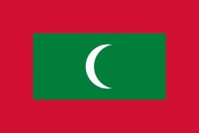
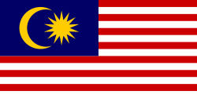
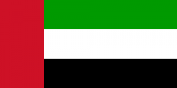
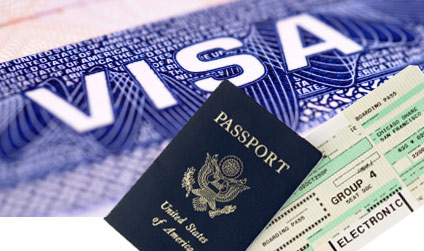
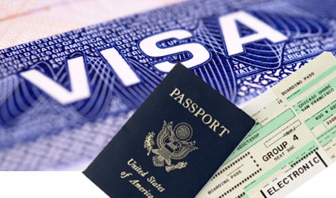

В странах которые можете поехать
Финляндия
Финляндия - популярная страна для выбора туристического маршрута, тут вы найдете прекрасные горнолыжные курорты и потрясающие финские сауны в маленьких деревянных домиках

Мальдивы
Мальдивские острова привлекают своих туристов лазурными берегами и белым песком с хорошим сервисом.
Архипелаг насчитывает более тысячи островов и островков, большая часть из которых необитаемая.
Япония
Страна восходящего солнца Япония ювелирно сочетает традиции и современность. Древние пагоды и ворота духов соседствуют тут с зеркальными небоскребами, помпезные «пятерки» — с уютными реканами, раскрученные спа-центры с национальными банями офуро. Этот, почти фантастический микс из наследия Востока и достижений Запада — главное, чем страна привлекает своих гостей.
Малайзия
В то время как космические корабли нарезают круги на околоземной орбите, трансвеститы окончательно заполоняют тайские улицы, а количество туристов на пляжах Гоа приближается к критической отметке, Малайзия по-прежнему остается уголком девственной природы, бережно хранимых традиций, чистых пляжей и отличного сервиса.
Дубай
Насладитесь всеми прелестями жизни в одном из самых технологичных городов планеты

Соединенные штаты америки
 

США - целая страна с кучей возможностей для туриста, за целый отпуск вы можете даже одного города не исследовать, по этому мы сделали несколько турристических маршрутов для вас
Италия

Италии грех жаловаться на недостаток внимания туристов — и зимой, и, в особенности, летом. Каждый сезон миллионы отдыхающих с энтузиазмом штурмуют знаменитый «сапог», находя для этого немало веских причин: действительно шикарную и сверхнасыщенную «экскурсионку», чистое теплое море, хорошие пляжи и красивую природу. Путешественников не отпугивают даже сравнительно высокие цены на отдых по-итальянски и достаточно аскетичное оснащение большинства городских отелей. Впрочем, к прибрежным гостиницам это замечание обычно не относится. Еще один пункт итальянской программы — весьма качественное, хоть и недешевое, лечение на термальных курортах.
Турция
Турция — это бюджетные и молодежные Кемер и Аланья, семейный Сиде и активный Белек, престижная Анталия и барный Мармарис, уединенный Фетхие и масса менее известных (чем и привлекательных) курортных местечек. Турция исторически-экскурсионная — это легендарная Троя (к слову, визит внутрь коня входит в обязательную программу посещения), античный Эфес с руинами библиотек, театров и храмов, травертиновые террасы Памуккале и ванна Клеопатры (где только не купалась эта неугомонная царица!), первый в мире мавзолей, как и следует из названия, царя Мавсола, останки Ликийского царства и многое другое.
Ибица

Солнце и море — вовсе не главные факторы, ради которых тысячи туристов каждое лето терпят не самые низкие цены, толкотню на пляже и очереди в ресторанах. Ибица славится на весь мир своими вечеринками и дискотеками. Одноименная столица острова и город Сан-Антонио — самые тусовочные молодежные центры, где обретает по большей части английская молодежь, но встречаются также немцы, французы, испанцы, а несколько реже — и наши соотечественники. Впрочем, даже летом на Ибице можно найти относительно уединенные курорты, особенно на севере острова, где прекрасно проведут неделю-другую туристы с детьми.